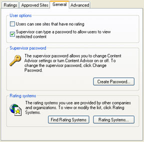

Free
computer Tutorials
|
Free
computer Tutorials
|
|
 home home |
Stay at Home and Learn | ||||
Internet Options - Content Advisor
For this tutorial, you'll need the Internet Options dialogue box. To see how to bring it up, click this page (opens in a new windows): How to bring up the Internet Options Dialogue Box
The Content Advisor allows you to set what sort of content you want to allow on to your computer when surfing the internet. If you don't want the kids coming across adult material then Internet Explorer can block this. It is not, however, entirely effective, and you shouldn't rely on it as your only content blocker, if this is a concern to you. Software like Netnanny and Cybersitter can do a better job. But to see how the Content Advisor works, click the Content tab of the Internet Options dialogue box. You'll see the following: The Content Advisor is at the top. If your button says Disable instead of Enable it means that you already have Content Advisor switched on. We'll assume that you don't, though. So click the Enable button to see the following:
The idea is that you select a category from the list, and then adjust the slider. The description area tells you more information about that setting, and what will be allowed. So a setting of Level 0 for the Language slider means users will be allowed to view content that contains inoffensive slang. Any other form of bad language (not the same as bad grammar, for those of you whose first language is not English!) will be blocked. The other four Levels in the Language category are: Level 1: Mild expletives It's important to remember that these are what you are willing to allow, when you adjust the slider. They are NOT what you are blocking. But select the other three categories and adjust the slider according to your needs. The letters RSAC, incidentally, stand for Recreational Software Advisory Council. This organization no longer exists, which you'll find out when you click the More Info button at the bottom. You'll get a web page telling you that it's now called ICRA - the Internet Content Rating Association (www.icra.org/about/). When Internet Explorer blocks or filters content it will be using this organization's rating system. To add or block sites that you don't want users to see, click the Approved Sites tab at the top. You can then allow or permit websites by typing them into a text box. The General tab is where you can set a password for the Content Advisor, preventing other users from switching it off:  Click the Create Password button. You'll then see an area with a couple of text boxes that allow you to type your new password. Make sure you don't forget this password as you'll be stuck with a browser that can be very restrictive! A good hint to create a memorable password is to use the initial letters from a favorite song or phrase. For example, here's a password that looks complex but is easy to remember (please don't use this one - we don't!) hb2y_hbdM The hb2y is "happy birthday to you". After the underscore character is, "happy birthday dear Mark". But the longer your memorable phrase is, the more secure it will be. Passwords of four or five characters can be cracked very easily!
|
|||||
|